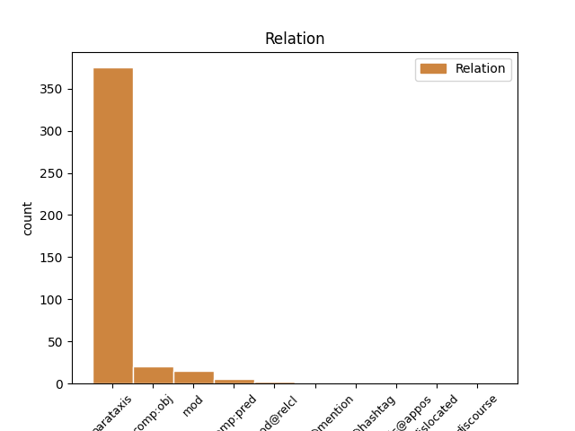
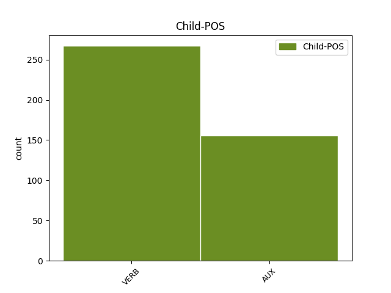

Distribution of features within this leaf


Agreement Rules sorted by frequency.
- When the dependent token is the parataxis(parataxis) of the head token, and the head token is VERB
1 Il _ _ _ _ 0 _ _ _
2 segretario _ _ _ _ 0 _ _ _
3 Uil _ _ _ _ 0 _ _ _
4 Barbagallo _ _ _ _ 0 _ _ _
5 : _ _ _ _ 0 _ _ _
6 “ _ _ _ _ 0 _ _ _
7 Oggi _ _ _ _ 0 _ _ _
8 fermiamo fermare VERB V Mood=Imp|Number=Plur|Person=1|Tense=Pres|VerbForm=Fin 0 _ _ _
9 l' _ _ _ _ 0 _ _ _
10 Italia _ _ _ _ 0 _ _ _
11 per _ _ _ _ 0 _ _ _
12 far _ _ _ _ 0 _ _ _
13 la _ _ _ _ 0 _ _ _
14 ripartire _ _ _ _ 0 _ _ _
15 “ _ _ _ _ 0 _ _ _
16 . _ _ _ _ 0 _ _ _
17 Deve dovere AUX VM Mood=Ind|Number=Sing|Person=3|Tense=Pres|VerbForm=Fin 8 parataxis _ _
18 aver _ _ _ _ 0 _ _ _
19 studiato _ _ _ _ 0 _ _ _
20 informatica _ _ _ _ 0 _ _ _
21 . _ _ _ _ 0 _ _ _
22 [ _ _ _ _ 0 _ _ _
23 @user _ _ _ _ 0 _ _ _
24 ] _ _ _ _ 0 _ _ _
1 Qualcuno _ _ _ _ 0 _ _ _
2 mi _ _ _ _ 0 _ _ _
3 dica dire VERB V Mood=Sub|Number=Sing|Person=3|Tense=Pres|VerbForm=Fin 0 _ _ _
4 che _ _ _ _ 0 _ _ _
5 droga _ _ _ _ 0 _ _ _
6 usa usare VERB V Mood=Ind|Number=Sing|Person=3|Tense=Pres|VerbForm=Fin 3 comp:obj _ _
7 Mario _ _ _ _ 0 _ _ _
8 Monti _ _ _ _ 0 _ _ _
9 perché _ _ _ _ 0 _ _ _
10 afferma _ _ _ _ 0 _ _ _
11 che _ _ _ _ 0 _ _ _
12 la _ _ _ _ 0 _ _ _
13 manovra _ _ _ _ 0 _ _ _
14 crescitalia _ _ _ _ 0 _ _ _
15 è _ _ _ _ 0 _ _ _
16 piaciuta _ _ _ _ 0 _ _ _
17 ! _ _ _ _ 0 _ _ _
18 Custu _ _ _ _ 0 _ _ _
19 deppid' _ _ _ _ 0 _ _ _
20 essi _ _ _ _ 0 _ _ _
21 calloni _ _ _ _ 0 _ _ _
22 ! _ _ _ _ 0 _ _ _
1 governo _ _ _ _ 0 _ _ _
2 monti _ _ _ _ 0 _ _ _
3 con _ _ _ _ 0 _ _ _
4 gianni _ _ _ _ 0 _ _ _
5 letta _ _ _ _ 0 _ _ _
6 , _ _ _ _ 0 _ _ _
7 pd _ _ _ _ 0 _ _ _
8 perplesso _ _ _ _ 0 _ _ _
9 . _ _ _ _ 0 _ _ _
10 Ma _ _ _ _ 0 _ _ _
11 che _ _ _ _ 0 _ _ _
12 vogliono _ _ _ _ 0 _ _ _
13 ? _ _ _ _ 0 _ _ _
14 Non _ _ _ _ 0 _ _ _
15 esagerate esagerare VERB V Mood=Imp|Number=Plur|Person=2|Tense=Pres|VerbForm=Fin 0 _ _ _
16 sennò _ _ _ _ 0 _ _ _
17 ci _ _ _ _ 0 _ _ _
18 mettiamo mettere VERB V Mood=Ind|Number=Plur|Person=1|Tense=Pres|VerbForm=Fin 15 mod _ _
19 @user _ _ _ _ 0 _ _ _
1 Roma _ _ _ _ 0 _ _ _
2 , _ _ _ _ 0 _ _ _
3 nomade _ _ _ _ 0 _ _ _
4 defeca _ _ _ _ 0 _ _ _
5 davanti _ _ _ _ 0 _ _ _
6 a _ _ _ _ 0 _ _ _
7 il _ _ _ _ 0 _ _ _
8 Quirinale _ _ _ _ 0 _ _ _
9 . _ _ _ _ 0 _ _ _
10 Avendo _ _ _ _ 0 _ _ _
11 lo _ _ _ _ 0 _ _ _
12 trovato trovare VERB V Gender=Masc|Number=Sing|Tense=Past|VerbForm=Part 0 _ _ _
13 occupato occupato VERB V Gender=Masc|Number=Sing|Tense=Past|VerbForm=Part 12 comp:pred _ SpaceAfter=No
14 . _ _ _ _ 0 _ _ _
15 [ _ _ _ _ 0 _ _ _
16 @user _ _ _ _ 0 _ _ _
17 ] _ _ _ _ 0 _ _ _
1 Berlusconi _ _ _ _ 0 _ _ _
2 dice dire VERB V Mood=Ind|Number=Sing|Person=3|Tense=Pres|VerbForm=Fin 0 _ _ _
3 sì _ _ _ _ 0 _ _ _
4 a _ _ _ _ 0 _ _ _
5 il _ _ _ _ 0 _ _ _
6 governo _ _ _ _ 0 _ _ _
7 Monti _ _ _ _ 0 _ _ _
8 . _ _ _ _ 0 _ _ _
9 di _ _ _ _ 0 _ _ _
10 il _ _ _ _ 0 _ _ _
11 resto _ _ _ _ 0 _ _ _
12 , _ _ _ _ 0 _ _ _
13 è essere AUX V Mood=Ind|Number=Sing|Person=3|Tense=Pres|VerbForm=Fin 2 discourse _ _
14 un' _ _ _ _ 0 _ _ _
15 ammucchiata _ _ _ _ 0 _ _ _
16 . _ _ _ _ 0 _ _ _
17 #fb _ _ _ _ 0 _ _ _
1 Gentiloni _ _ _ _ 0 _ _ _
2 accoglie _ _ _ _ 0 _ _ _
3 i _ _ _ _ 0 _ _ _
4 due _ _ _ _ 0 _ _ _
5 ostaggi _ _ _ _ 0 _ _ _
6 italiani _ _ _ _ 0 _ _ _
7 sopravvissuti _ _ _ _ 0 _ _ _
8 : _ _ _ _ 0 _ _ _
9 " _ _ _ _ 0 _ _ _
10 Chi _ _ _ _ 0 _ _ _
11 non _ _ _ _ 0 _ _ _
12 muore morire VERB V Mood=Ind|Number=Sing|Person=3|Tense=Pres|VerbForm=Fin 14 mod@relcl _ _
13 si _ _ _ _ 0 _ _ _
14 rivede rivedere VERB V Mood=Ind|Number=Sing|Person=3|Tense=Pres|VerbForm=Fin 0 _ _ _
15 ! _ _ _ _ 0 _ _ _
16 " _ _ _ _ 0 _ _ _
17 [ _ _ _ _ 0 _ _ _
18 @user _ _ _ _ 0 _ _ _
19 ] _ _ _ _ 0 _ _ _
1 Finisce finire VERB V Mood=Ind|Number=Sing|Person=3|Tense=Pres|VerbForm=Fin 0 _ _ _
2 il _ _ _ _ 0 _ _ _
3 precariato _ _ _ _ 0 _ _ _
4 o _ _ _ _ 0 _ _ _
5 inizia _ _ _ _ 0 _ _ _
6 l' _ _ _ _ 0 _ _ _
7 Odissea _ _ _ _ 0 _ _ _
8 ? _ _ _ _ 0 _ _ _
9 #labuonascuola _ _ _ _ 0 _ _ _
10 di _ _ _ _ 0 _ _ _
11 #renzi _ _ _ _ 0 _ _ _
12 è essere AUX V Mood=Ind|Number=Sing|Person=3|Tense=Pres|VerbForm=Fin 1 parataxis@hashtag _ _
13 #lacattivascuola _ _ _ _ 0 _ _ _
14 #passodopopasso _ _ _ _ 0 _ _ _
15 http://t.co/o0U2qywCyp _ _ _ _ 0 _ _ _
1 #FF _ _ _ _ 0 _ _ _
2 @user _ _ _ _ 0 _ _ _
3 : _ _ _ _ 0 _ _ _
4 Oh _ _ _ _ 0 _ _ _
5 che _ _ _ _ 0 _ _ _
6 notizia _ _ _ _ 0 _ _ _
7 , _ _ _ _ 0 _ _ _
8 si _ _ _ _ 0 _ _ _
9 va andare VERB V Mood=Ind|Number=Sing|Person=3|Tense=Pres|VerbForm=Fin 0 _ _ _
10 verso _ _ _ _ 0 _ _ _
11 un _ _ _ _ 0 _ _ _
12 governo _ _ _ _ 0 _ _ _
13 Monti _ _ _ _ 0 _ _ _
14 e _ _ _ _ 0 _ _ _
15 lo _ _ _ _ 0 _ _ _
16 spread _ _ _ _ 0 _ _ _
17 diminuisce _ _ _ _ 0 _ _ _
18 . _ _ _ _ 0 _ _ _
19 Che _ _ _ _ 0 _ _ _
20 sorpresa _ _ _ _ 0 _ _ _
21 ! _ _ _ _ 0 _ _ _
22 E essere VERB V Mood=Ind|Number=Sing|Person=3|Tense=Pres|VerbForm=Fin 9 parataxis@appos _ _
23 proprio _ _ _ _ 0 _ _ _
24 una _ _ _ _ 0 _ _ _
25 cosa _ _ _ _ 0 _ _ _
26 di _ _ _ _ 0 _ _ _
27 cui _ _ _ _ 0 _ _ _
28 gioire _ _ _ _ 0 _ _ _
29 ! _ _ _ _ 0 _ _ _
1 Questa _ _ _ _ 0 _ _ _
2 Roma _ _ _ _ 0 _ _ _
3 niente _ _ _ _ 0 _ _ _
4 male _ _ _ _ 0 _ _ _
5 ci _ _ _ _ 0 _ _ _
6 fa _ _ _ _ 0 _ _ _
7 fare _ _ _ _ 0 _ _ _
8 un _ _ _ _ 0 _ _ _
9 buon _ _ _ _ 0 _ _ _
10 Natale _ _ _ _ 0 _ _ _
11 , _ _ _ _ 0 _ _ _
12 e _ _ _ _ 0 _ _ _
13 chi _ _ _ _ 0 _ _ _
14 invece _ _ _ _ 0 _ _ _
15 non _ _ _ _ 0 _ _ _
16 fa fare VERB V Mood=Ind|Number=Sing|Person=3|Tense=Pres|VerbForm=Fin 0 _ _ _
17 sconti _ _ _ _ 0 _ _ _
18 è essere AUX V Mood=Ind|Number=Sing|Person=3|Tense=Pres|VerbForm=Fin 16 dislocated _ _
19 sto _ _ _ _ 0 _ _ _
20 cazzo _ _ _ _ 0 _ _ _
21 de _ _ _ _ 0 _ _ _
22 Mario _ _ _ _ 0 _ _ _
23 Monti _ _ _ _ 0 _ _ _
24 ! _ _ _ _ 0 _ _ _
Disagree Examples:
1 Il _ _ _ _ 0 _ _ _
2 #governo _ _ _ _ 0 _ _ _
3 #Monti _ _ _ _ 0 _ _ _
4 arriverà arrivare VERB V Mood=Ind|Number=Sing|Person=3|Tense=Fut|VerbForm=Fin 0 _ _ _
5 a _ _ _ _ 0 _ _ _
6 fine _ _ _ _ 0 _ _ _
7 legislatura _ _ _ _ 0 _ _ _
8 ? _ _ _ _ 0 _ _ _
9 #Bossi _ _ _ _ 0 _ _ _
10 : _ _ _ _ 0 _ _ _
11 Ma _ _ _ _ 0 _ _ _
12 siete essere AUX V Mood=Ind|Number=Plur|Person=2|Tense=Pres|VerbForm=Fin 4 parataxis _ _
13 matti _ _ _ _ 0 _ _ _
14 ! _ _ _ _ 0 _ _ _
15 da _ _ _ _ 0 _ _ _
16 che _ _ _ _ 0 _ _ _
17 pulpito _ _ _ _ 0 _ _ _
18 , _ _ _ _ 0 _ _ _
19 infatti _ _ _ _ 0 _ _ _
20 siamo _ _ _ _ 0 _ _ _
21 noi _ _ _ _ 0 _ _ _
22 a _ _ _ _ 0 _ _ _
23 credere _ _ _ _ 0 _ _ _
24 che _ _ _ _ 0 _ _ _
25 esiste _ _ _ _ 0 _ _ _
26 la _ _ _ _ 0 _ _ _
27 #PADANIA _ _ _ _ 0 _ _ _
1 la _ _ _ _ 0 _ _ _
2 #fornero _ _ _ _ 0 _ _ _
3 se _ _ _ _ 0 _ _ _
4 mette _ _ _ _ 0 _ _ _
5 a _ _ _ _ 0 _ _ _
6 piagne _ _ _ _ 0 _ _ _
7 mentre _ _ _ _ 0 _ _ _
8 spiega spiegare VERB V Mood=Ind|Number=Sing|Person=3|Tense=Pres|VerbForm=Fin 0 _ _ _
9 come _ _ _ _ 0 _ _ _
10 la _ _ _ _ 0 _ _ _
11 #manovra _ _ _ _ 0 _ _ _
12 di _ _ _ _ 0 _ _ _
13 il _ _ _ _ 0 _ _ _
14 governo _ _ _ _ 0 _ _ _
15 #MONTI _ _ _ _ 0 _ _ _
16 metterà mettere VERB V Mood=Ind|Number=Sing|Person=3|Tense=Fut|VerbForm=Fin 8 comp:obj _ _
17 in _ _ _ _ 0 _ _ _
18 ginocchio _ _ _ _ 0 _ _ _
19 la _ _ _ _ 0 _ _ _
20 gente _ _ _ _ 0 _ _ _
21 : _ _ _ _ 0 _ _ _
22 #lacrimedicoccodrillo _ _ _ _ 0 _ _ _
1 Parigi _ _ _ _ 0 _ _ _
2 , _ _ _ _ 0 _ _ _
3 ucciso uccidere VERB V Gender=Masc|Number=Sing|Tense=Past|VerbForm=Part 0 _ _ _
4 uomo _ _ _ _ 0 _ _ _
5 con _ _ _ _ 0 _ _ _
6 una _ _ _ _ 0 _ _ _
7 cintura _ _ _ _ 0 _ _ _
8 esplosiva _ _ _ _ 0 _ _ _
9 finta _ _ _ _ 0 _ _ _
10 . _ _ _ _ 0 _ _ _
11 Ora _ _ _ _ 0 _ _ _
12 lo _ _ _ _ 0 _ _ _
13 aspettano aspettare VERB V Mood=Ind|Number=Plur|Person=3|Tense=Pres|VerbForm=Fin 3 parataxis _ _
14 72 _ _ _ _ 0 _ _ _
15 bambole _ _ _ _ 0 _ _ _
16 gonfiabili _ _ _ _ 0 _ _ _
17 . _ _ _ _ 0 _ _ _
18 [ _ _ _ _ 0 _ _ _
19 @user _ _ _ _ 0 _ _ _
20 ] _ _ _ _ 0 _ _ _
1 Alex _ _ _ _ 0 _ _ _
2 Di _ _ _ _ 0 _ _ _
3 il _ _ _ _ 0 _ _ _
4 Piero _ _ _ _ 0 _ _ _
5 resterà restare VERB V Mood=Ind|Number=Sing|Person=3|Tense=Fut|VerbForm=Fin 0 _ _ _
6 in _ _ _ _ 0 _ _ _
7 India _ _ _ _ 0 _ _ _
8 solo _ _ _ _ 0 _ _ _
9 tre _ _ _ _ 0 _ _ _
10 mesi _ _ _ _ 0 _ _ _
11 . _ _ _ _ 0 _ _ _
12 Almeno _ _ _ _ 0 _ _ _
13 così _ _ _ _ 0 _ _ _
14 gli _ _ _ _ 0 _ _ _
15 hanno avere AUX VA Mood=Ind|Number=Plur|Person=3|Tense=Pres|VerbForm=Fin 5 parataxis _ _
16 fatto _ _ _ _ 0 _ _ _
17 credere _ _ _ _ 0 _ _ _
18 . _ _ _ _ 0 _ _ _
19 [ _ _ _ _ 0 _ _ _
20 @user _ _ _ _ 0 _ _ _
21 ] _ _ _ _ 0 _ _ _
1 L' _ _ _ _ 0 _ _ _
2 uomo _ _ _ _ 0 _ _ _
3 che _ _ _ _ 0 _ _ _
4 vive _ _ _ _ 0 _ _ _
5 una _ _ _ _ 0 _ _ _
6 vita _ _ _ _ 0 _ _ _
7 indegna _ _ _ _ 0 _ _ _
8 deve _ _ _ _ 0 _ _ _
9 sempre _ _ _ _ 0 _ _ _
10 esprimere _ _ _ _ 0 _ _ _
11 propositi _ _ _ _ 0 _ _ _
12 morali _ _ _ _ 0 _ _ _
13 Flaiano _ _ _ _ 0 _ _ _
14 Un _ _ _ _ 0 _ _ _
15 po' _ _ _ _ 0 _ _ _
16 come _ _ _ _ 0 _ _ _
17 #labuonascuola _ _ _ _ 0 _ _ _
18 : _ _ _ _ 0 _ _ _
19 fosse essere AUX V Mood=Sub|Number=Sing|Person=3|Tense=Imp|VerbForm=Fin 22 mod _ _
20 buona _ _ _ _ 0 _ _ _
21 nn _ _ _ _ 0 _ _ _
22 avrebbe avere VERB V Mood=Cnd|Number=Sing|Person=3|Tense=Pres|VerbForm=Fin 0 _ _ _
23 qst _ _ _ _ 0 _ _ _
24 titolo _ _ _ _ 0 _ _ _